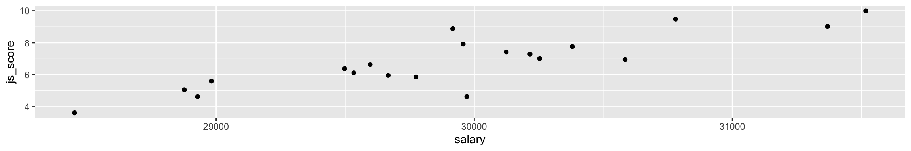

05:00
STA1005 - Quantitative Research Methods
Lecture 8: Introduction to Quarto for Research
Damien Dupré | DCU Business School
Objectives
With Posit Cloud, we will see how to create Quarto files (.qmd) to embed text and code output and generate professional outputs.
What do I need to do before starting?
- Sign up for a free Posit Cloud account
- https://posit.cloud/
Objectives
Where can I find more resources?
What is Quarto?
The goal is to create a document that is all-in-one:
- Documents that include source code for their production
- Notebook AND plain-text flavours
- Programmatic automation and reproducibility
What is Quarto?
Quarto is an open-source scientific and technical publishing system that builds on standard markdown with features essential for scientific communication.
- Computations: Python, R, Julia, Observable JS
- Markdown: Pandoc flavoured markdown with many enhancements
- Output: Documents, presentations, websites, books, blogs
See https://quarto.org for more details
Two Sides of Quarto Files
On the editor side…
- Write text in markdown
- Insert code using R or Python
- Write “metadata” with YAML
On the output side…
- Output to HTML
- Output to PDF
- Output to Word
- Many other variations too
Try it by yourself!
️ Your Turn!
In your Posit Cloud:
- Create a new Quarto document:
File > New File > Quarto Document - A popup will appear, untick “Use visual markdown editor”
- Leave everything else as default and click
Create - If a warning appears, click
Installon the message to install the {rmarkdown} package

- Click the blue arrow
Renderand save the document asreport.qmd
Simple Example

Simple Example


Quarto Structure
Quarto files have 3 different types of content:
1. The YAML
Displayed between two series of --- signs, it corresponds to the metadata shown in the header of the output file (e.g., title, author, date, …) and the type of output (e.g., pdf, html, doc, …)
2. The Text
Written in Markdown style (i.e., text without formatting), it is used as core description in the output document
3. The Code
Inserted in the Quarto file inside “chunks”, the code is processed when creating the output and can display figures and tables
The “YAML”

The Markdown Text

The R Code

Create the Output File
To generate the output file:
- Go to
File > Render Document(aRendershortcut icon is also displayed in the menu bar)


- Give a name to your document, click
OK, and voila!
Quarto Editor vs Output
1. The YAML
Output HTML
Simple
Default
Output HTML
Elaborated
Execute Code
Quarto can use R or Python to execute code:
- R code is executed natively with the
{knitr}engine - Quarto can also use the
Jupyterengine to execute Julia, Python, or other languages that Jupyter supports
Execute Code
If R code is found first, it will default to knitr
Or you can force using knitr if you’re mixing R/Python content or if your first code chunk is not R.
Execute Code
Quarto also introduces some of these as options for execute: in YAML, for similar concepts in other languages.
2. Markdown Style
Emphasising Text
Creating Lists
Creating Headings
LaTeX Equations
Markdown Example
Example of a markdown document…
Here’s what the output looks like…
Introduction
Welcome to my awesome class. You will learn all kinds of useful things about Quarto.
- Markdown is simple
- You can add R code
- You can add \(\LaTeX\) inline
- You can add LaTeX equations:
\[y=ax+b\]
️ Your Turn!
In Posit Cloud, with the file that you have previously created:
Remove all content except the YAML
Modify the YAML to include:
- Write a sentence about your emotions (positive and negative) triggered by R, use
*and**to highlight some part of your text in italic and bold - Add a section title with
##and a subsection title with### - Click
Renderonce finished
05:00
3. The R Code Chunks
Anatomy of a Code Chunk
- Has 3x backticks on each end
``` - Place engine (
r) between curly braces{r}
- Place options underneath, behind the
#|(hashpipe):#| option1: value
First Code Chunk
In the first code chunk, all the actions that will be applied to the following chunks will be added (e.g., code options, libraries used, data downloaded, …).
Code Chunk Options
Chunk output can be customised with hashpipe options (i.e., arguments set after the #|). Above, we use 1 argument:
#| include: falseprevents code and results from appearing in the finished file. Quarto still runs the code in the chunk, and the results can be used by other chunks.
Additional options can be turned on only for one chunk:
#| results: asiswill display the output of the code as regular text
See the Quarto Reference Guide for a complete list of chunk options.
Figures in the Output Document
As long as the package {tidyverse} is loaded and the data object created in the first setup chunk, then a ggplot visualisation can be used in a separate chunk:
---
title: "Untitled"
format: html
execute:
echo: false
warning: false
---
```{r}
#| label: setup
#| include: false
library(tidyverse)
organisation_beta <- read_csv("/cloud/project/organisation_beta.csv")
```
# My Section Title
My text followed by my figure.
```{r}
ggplot(organisation_beta) +
aes(salary, js_score) +
geom_point()
```Working with Code
To display the output of your code in the final document, just include your code in a chunk:
Call:
lm(formula = js_score ~ salary + perf, data = organisation_beta)
Coefficients:
(Intercept) salary perf
-49.48511 0.00187 0.08285 Working with Code
Remember, when the code results in creating an object, while the object is created, no output is printed in the final document:
Working with Code
To create an object and print your code in the same chunk, the name of the object has to be included in the chunk. This will print the content of the object:
Call:
lm(formula = js_score ~ salary + perf, data = organisation_beta)
Coefficients:
(Intercept) salary perf
-49.48511 0.00187 0.08285 Visualisation Specific Options
Some chunk options are specific to visualisation outputs:
- fig-cap: “Example Caption”
- fig-height: 2
- fig-width: 12
Note, the default unit for height and width is inches.
Visualisation Specific Options

Example Caption
Live Demo
️ Your Turn!
In your report.qmd document:
- Create a first code chunk called
setup. In this chunk, load the{report}packages and create your data object with the following code:
- Create a second code chunk. In this chunk, run the following linear regression and add
#| results: asisin its options:
05:00
️ Your Turn! (continued)
- Create a third code chunk. In this chunk, include the following visualisation:
- Render the document to observe its structure
03:00
4. Gallery
Professional Websites

Books

Slide Decks

CV

Academic Papers

5. Quarto Journal Templates
Quarto Journal Templates
The Quarto team has developed several Journal formats and made them available within the quarto-journals GitHub organization. These formats include the following Journal/Publisher:
- Association of Computing Machinery
- American Chemical Society
- American Geophysical Union
- Biophysical journal
- Elsevier Journals
- American Statistical Association
- Journal of Statistical Software
Many more formats will be added over time.
Quarto Journal Templates
The quarto use template command can be used to create an article from one of these formats from the terminal (and not the console). For example:
Terminal
quarto use template quarto-journals/acm
quarto use template quarto-journals/acs
quarto use template quarto-journals/agu
quarto use template quarto-journals/biophysical-journal
quarto use template quarto-journals/elsevier
quarto use template quarto-journals/jasa
quarto use template quarto-journals/jss
quarto use template quarto-journals/plosLive Demo
️ Your Turn!
- Create a new quarto-journals document using one of the following templates from the terminal:
Terminal
quarto use template quarto-journals/acm
quarto use template quarto-journals/acs
quarto use template quarto-journals/agu
quarto use template quarto-journals/biophysical-journal
quarto use template quarto-journals/elsevier
quarto use template quarto-journals/jasa
quarto use template quarto-journals/jss
quarto use template quarto-journals/plosNote
Choose Y when asked if you trust the authors of this template and choose a directory name.
- Render the default
.qmddocument obtained to observe it.
05:00
️ Your Turn!
In this new .qmd document:
Remove everything except the YAML
Create a first
setupchunk. In this chunk, load the{report}packages and create your data object with the following code:
- Create a second code chunk. In this chunk, run the following linear regression and add
#| results: asisin its options:
05:00
️ Your Turn! (continued)
- Install the package {tidyverse} and add
library(tidyverse)in the setup chunk - Create a third code chunk. In this chunk, include the following visualisation:
- Render the document to observe its structure
03:00
6. Quarto Website Templates
Quarto Websites
Quarto Websites are a convenient way to publish groups of documents. Documents published as part of a website share navigational elements, rendering options, and visual style.
Website navigation can be provided through a global navbar, a sidebar with links, or a combination of both for sites that have multiple levels of content. You can also enable full text search for websites.

Quarto Websites
Unfortunately, Quarto Websites cannot be visualised on Posit.cloud as it is not your computer.
If you want to give it a go:
- Install R on your own computer from https://cran.r-project.org/
- Install RStudio on your own computer from https://posit.co/download/rstudio-desktop
Note
Among the Integrated Development Environment (IDE) there is also VScode, Positron, and many more.
- Install Quarto on your own computer from https://quarto.org/
Quarto Websites
Creates a new website project from the Terminal. This website project is initiated by a folder called mysite located on the root of your terminal.
Quarto Websites
The folder contains only 4 files:
_quarto.ymldesigns the overall style and the navbarindex.qmdcorresponds to the homepageabout.qmdis another pagestyles.cssis for additional style not defined in_quarto.yml
Improve your Website:
- Navigation instructions here: https://quarto.org/docs/websites/website-navigation.html
- Option instructions here: https://quarto.org/docs/reference/projects/websites.html
Quarto Websites
These commands are used to render the website by converting all the .qmd files to .html files stored in a _site folder.
The website preview will open in a new web browser. As you edit and save index.qmd (or other files like about.qmd) the preview is automatically updated.

Demonstration
Warning
Only run on your own computer if R, RStudio (or equivalent), and Quarto are installed.
- In the
Terminalwindow, run the following instruction:
- and
Demonstration
- In the
_quarto.ymlfile, simply change the output directory folder to a folder nameddocsas follows:
Then render the website:
Demonstration
Your website default folder should look like that →
Note
The old folder _site will not be used any more and is now useless.

Demonstration
Add a .nojekyll file to the root of your repository that tells GitHub Pages not to do additional processing of your published site using Jekyll (the GitHub default site generation tool).
You can create it from the terminal when the website folder is the current directory:
Demonstration
In GitHub, just drag and drop all the files at once like this:

Finally, click Settings -> Pages choose:
mainbranch/docsfolder- and Save
Thanks for your attention
and don’t hesitate to ask if you have any questions!